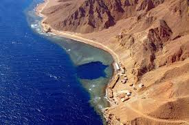
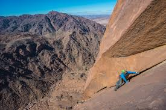
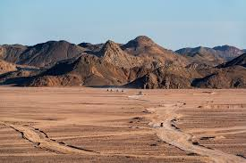
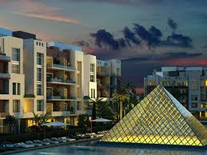
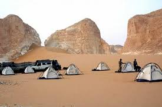
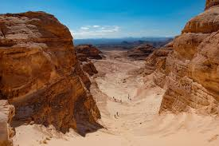

Why Egypt's Dahab is the perfect Red Sea resort town? Let's see the most important sights in Dahab:
| The Blue Hole: | One of Dahab's most famous sites, the Blue Hole is considered the world's deadliest diving spot. |  |
| Climbing destination: | Rock climbing has become very popular in Dahab, and the hugely popular Wadi Qnai provides a number of single and multi-pitch routes. |  |
| Mountain with a hole: | Positioned between Dahab and St. Catherine, Jebel Makhroum is one of the many desert attractions that makes hiking in Sinai so alluring. |  |
| Colorful promenade: | The former fishing town is built around a boardwalk full of tour operators, handicraft shops, multicultural restaurants and cafes. |  |
| Desert camp: | One of the most important activities in Dahab is enjoying nature and spending time camping with friends. |  |
| Trekking Sinai: | Camel trekking around the unique landscape of St. Catherine, a town located just two hours away from Dahab, is another favored Sinai activity. |  |